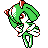

#271
Kirlia
PsychicFairy
Abilities: Synchronize, Trace
Base stats BST 338
HP38
Attack35
Defense35
Speed50
Sp. Atk95
Sp. Def85
Evolution
dbbw EVOLVE_LEVEL_FEMALE, 30, GARDEVOIRdbbw EVOLVE_LEVEL_MALE, 30, GALLADELevel-up learnset
LevelMoveType
Lv. 1ConfusionPsychic
Lv. 1GrowlNormal
Lv. 1TeleportPsychic
Lv. 1Double TeamNormal
Lv. 7Disarming VoiceFairy
Lv. 13PsybeamPsychic
Lv. 16Draining KissFairy
Lv. 23HypnosisPsychic
Lv. 27PsychicPsychic
Lv. 31Calm MindPsychic
Lv. 35MoonblastFairy
Lv. 43CharmNormal
Lv. 47Dream EaterPsychic
Lv. 51Future SightPsychic